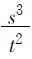

第一章 特殊的量
第一章 特殊的量
首先有质的量是一种直接的、特殊的定量（比量）。
其次，这种特殊的定量，与别的定量相比，成为一种量的特殊化，是漠不相关的定量的扬弃。于是这个尺度是一个准尺（Regel），并包含了两个有区别的尺度的环节，即自在之有的量的规定性和外在的定量。但在这种区别中，这两个方面变成质，准尺变成质的比率；因此尺度表明自己为
第三，质的比率；这些质首先具有一个尺度；但后来这一个尺度又把自己特殊化为尺度的一种内在的区别。
甲、特殊定量（比量）
1.尺度是定量的单纯自身关系，是定量特有的自在的规定性；所以，定量是有质的，首先，作为直接的尺度，定量是一种直接的定量，因而是某种规定了的定量；同样，属于定量的质，也是直接的，是某种被规定了的质。定量不再是漠不相关的界限，而是自身相关的外在性，这样的定量本身就是质，而与质又有区别，它之超不出质，正如质超不出它。所以定量是回复到与自身相等的单纯规定性；定量与规定的实有合而为一，正如规定的实有与它的定量合而为一那样。
如果人们愿意把已获得的规定造成一个命题，那么，人们可以说：“一切实有的东西都有一个尺度。”一切实有都有一个大小，这个大小属于某物自身的本性；这种大小构成某物被规定的本性和内在之有。某物对这个大小并不是漠不相关的，并不是这种大小改变了，某物仍然是某物，而是大小的变化会改变某物的质。定量作为尺度，已不再是非界限的界限；它现在是事物的规定，以致这个定量的增减会毁灭事物的规定。
一个尺度作为通常所谓标准，是一个定量，这个定量对于外在的数目而言，是任意采取的自在地规定的单位。这样一个单位事实上也诚然能够是自在地规定的单位，如足(1)和类似的原始的尺度；但由于这样的单位同时也被用作别的事物的标准，所以它对那些事物说来，便只是外在的尺度，而不是它们原有的尺度。所以地球的直径或钟摆的长度可以当作是自为的特殊定量（比量）。但是，人们想把地球直径或钟摆长度的多少分之一，以及在哪个纬度上的钟摆长度的多少分之一，用作标准，则是任意的。对别的事物来说，这样一个标准更是某种外在的东西。这些事物已经以特殊的方式，把一般的特殊的定量（比量），再加以特殊化，因而使自身成为特殊的事物。所以，说有一种天然的事物标准是愚蠢的。况且，一般标准仅供外在比较之用；从一般标准被认为是一般尺度这种最肤浅的意义上说，什么被用作标准乃是完全无所谓的事情。对于基本尺度的意义，不应该这样了解，即：特殊事物的天然尺度，借这种基本尺度而表现，并从而根据一种准则被认为是一个一般尺度的特殊化，即各特殊事物的一般物体的尺度的特殊化。但是，一个绝对的标准，假如不具有上述这种意义，那便只有一个共同的东西那样的意味和兴趣了，而这样的共同的东西并非自在地是普遍的，而是由于约定俗成，成为普遍的。
直接的尺度是一个单纯的大小规定，例如有机物的大小，它们的肢体的大小等等。但是每种存在物之所以成为存在物，或一般地说，它之所以具有实有，就由于有一个大小。这个存在物，就定量而言，是漠不相关的大小，是可以接受外在的规定的，是可以反复增减的。但是，作为尺度，它又与它自身作为定量不同，即与漠不相关的规定不同，并且对于那种在某个界限内漠不相关的反复增减的东西，是一个限制。
因为在实有中量的规定性是双重的，一方面是它与质相连，另一方面是它可以反复增减，而于质无损；所以，若某物具有尺度，当其定量改变时，某物便趋于消失。就定量能够变化，而质与尺度不变而言，这种消灭一方面似乎是出人意料的，但另一方面又是完全可以理解的，因为这种消灭是由于渐变。(2)用渐变范畴来想象或说明一种质或某物的消失，是很方便的，这是由于人们好像对于这种消失几乎能用眼睛看到；因为定量既被建立为外在的，就其本性说是可变化的界限，那么这种变化之仅仅作为定量的变化，就极易了解了。但事实上任何东西都没有由此得到说明；变化本质上同时就是从一种质到另一种质的过渡，或者说从一个实有到一个非实有的较抽象的过渡。这里包含着一种与在渐变中不同的规定；渐变只是增多或减少，是对大小作片面的坚持。
2.(3)但是，从一种似乎仅仅是量的变化也会转化为一种质的变化，古代人已经注意到这种联系，并且用通俗的例子，说明由于对这种联系的无知所产生的混乱，叫做秃头和谷堆的著名悖论，就属于这种情况。据亚里士多德的解释，这些办法是用来强迫人们说出与他先所主张的相反的话。人们问道：从头上或从马尾巴上拔掉一根毛发，是否会造成秃子？如果拿走一粒谷，一堆谷是否会停止其为一堆谷？既然这样的拔掉仅仅造成一种完全不重要的量的区别，人们便可以毫不踌躇地同意这样做；于是，再拔掉一根毛发，再拿走一粒谷，并且这样重复下去，结果，每一次都根据大家的同意，只拿走一根或一粒，最后出现了质的变化，头和尾巴变得光秃秃的，谷堆消失了。在同意时，人们不仅仅忘记了重复性，而且忘记了自身不重要的量（像财产中一笔本身不重要的支出那样），积聚起来，其总和就构成质的整体，以致这整体最后消失了，头光了，钱袋空了。
由此而来的困惑、矛盾，并不是通常所谓的诡辩。这样的矛盾并不好像是故弄玄虚。上述假设的对方所犯的错误，即常识所犯的错误，在于假定一个量仅仅是漠不相关的界限，即正是用量的规定意义来看待量。这种假定被量所导致的真理推翻了，量是尺度的一个环节，并与质相联系。(4)被驳倒的东西，是对抽象的定量规定性作片面的坚持。——因此，(5)那些曲折之谈并不是空洞的和咬文嚼字的游戏，而是本身正确的，是对思维中出现的现象感到兴趣的那种意识的产物。(6)
由于定量被认为是一种漠不相关的界限，定量便成了这样一个方面，即实有从这个方面受到攻击，并且趋于消失。从质好像不起作用的这一方面来把握实有，这乃是概念的狡狯；——以至于一个国家、一笔财富等等的增大，虽导致该国家和财主于不幸，而初看起来却好像是幸运。
3.尺度在其直接性中是一个规定了的、与质相连的大小的一种普通的质。一方面，定量是一个漠不相关的、可以不改变质而自身或增或减的界限，另一方面，定量是有质的、特殊的，于是这两方面也就有所区别。两方面都是同一个尺度的大小规定；但既然尺度首先是出现在直接性里的，那么进一步说，这种区别也应该认为是一种直接的区别，而因此两方面也各有一个存在。尺度的存在，是自在地规定的大小，现在既与外在的可改变的方面的存在发生关系，就成了对规定大小的漠不相关的一种扬弃，就成了对尺度的一种特殊化。
乙、特殊化的尺度
特殊化的尺度
首先是一个准尺，一个外在于单纯定量的尺度；
第二，是特殊的量，它规定外在的定量；
第三，双方作为特殊的量规定性的两个质而彼此相比，合为一个尺度。
1.准尺
准尺或已经说过的标准，首先是作为一个自在地规定的大小；它对一个定量来说，是单位，这个定量是一个特殊的存在，存在于与准尺所是的某物不同的另一某物上，而为准尺所测量，即被规定为那个单位的数目。这种比较是一种外在的活动，那个单位本身是一个任意的大小，这个大小同样也能被建立为数目（尺就是寸的一个数目）。但尺度不仅仅是外在的准尺，而且作为特殊的尺度，它必定在其自身就与一个他物即一个定量相比，它才是特定的。
2.特殊化的尺度
尺度是外在的，即漠不相关的大小的特殊规定；这种大小现在是在尺度的某物中，被另一个一般存在建立起来的；尺度本身虽然是定量，不过由于与定量有区别，它是质的东西，对仅仅是漠不相关的、外在的定量进行规定。这个某物本身中具有为他之有这个方面，漠不相关的增减变化就属于这个方面。这种内在的进行测量的东西是某物的质，与另一某物中的这种同样的质相对立；但是这种质在另一某物中就相对于前一某物之被规定为测量者的质而言，其定量是相对地无尺度的。
就某物是一个尺度自身而言，其质的大小变化在它那里便是外在的；某物并不由此而成了算术的数量。但是，某物的尺度在对待这种数量时，却是以一种内涵的东西自居而又以一种特殊的方式吸取数量的；尺度改变了外在地建立起来的变化，把这种定量造成另一种定量，并通过这种特殊化，在这种外在性中表现自身是自为之有。这种被特殊吸取的数量自身是一个定量，这个定量也依赖于别的数量，后者对它来说，仍只是外在的数量。因此，特殊化了的数量也是可变的，不过它因此并不是一个定量本身，乃是一个外在定量，以一种继续不断的方式特殊化了。所以，尺度以一个比率为其实有，而一个尺度的特殊之处，一般说来，就是这个比率的指数。
从上面这些规定里可以看到，内涵定量与外延定量，乃是同一个定量，在一方面以内涵的形式出现，在另一方面则以外延的形式出现。在这种区别中，奠定基础的定量并不遭受任何变化，区别只是一种外在的形式。反之，在特殊化的尺度中，定量一方面是在它的直接的大小中，但另一方面则由于比率指数而被认为是在别的数目中。
构成特殊之点的指数，首先可能像是一个固定的定量，作为外在之项与质方面被规定之项的比率的商。但这样一来，指数便不过是一个外在定量；指数在这里只意谓着那个使定量本身特殊化的质的环节本身。定量真正内在的质的东西，像我们早先看到的，只是方幂的规定。这样一个方幂的规定，必定是那种构成比率的规定，并在此作为自在之有的规定而与作为外在状态的定量相对立。这个定量是以可计数的一为根本，这个可计数的一构成定量的自在地被规定之有，而可计数的一的关系是外在的，这样仅由直接定量自身的本性所规定的变化，就在于这样一个可计数的一的相加，加一个又加一个，如此等等。如果这样一来，外在的定量就以算术级数而改变自身，那么，尺度的质的本性所作的特殊化反应，便产生另外一个系列，这个系列与前一算术级数联系着，随它而增减，但这增减并不是以一个由数的指数所规定的比率来进行的，而是以一个依据方幂规定的、与一个数不可通约的比率来进行的。
注释
引一个例子来说，温度便是一个质，在这个质中，定量作为外在的与特殊化了的这两个方面，是有区别的。作为定量，温度是外在的温度，甚至于是作为一般媒介物的一个物体的温度，关于这个温度，它的变化是被假定为按算术级数的阶梯进展的，并且是均匀地增多或减少的；与此相反，温度将为各种不同的现存于温度中的个别物体以各种不同的方式来吸收，因为这些个别物体由它们的内在尺度而规定从外边所接受的温度，这些个别物体的温度变化，与媒介物的温度变化或与它们之间的温度变化相适应，并不是成正比例的。以同一温度来比较不同的物体，便会给出它们的特殊的温度（比热）及热容的比率数值。但是，物体的热容随不同的温度而变，从而连系着一个特殊形态变化的出现。于是，一个特别的特殊化表现于这些温度的增减之中。温度被设想为外在的，它与一个特定物体的温度（特定物体的温度同时也是依赖于前一种温度）的比率，并没有一个固定的比率指数；这种热的增减并不随着外在的热的增减而继续均匀地进行。在这里的温度被假定为完全外在的，它的变化也仅仅是外在的，或纯粹是量的。然而，它本身却是空气的温度，或某种别的特殊温度。因此，更详密地看来，比率到底不可看做是一种单纯的量的定量对一种质化了的定量之间的比率，而是两种特殊定量（比量）的比率。尺度的环节不仅是由同一个质的两方面（即一个量的方面和一个质化的定量的方面）构成，而且是由两个自身就是尺度的质的比率构成，特殊化的比率就将直接以这种方式进一步规定自己。
3.作为质的两方面之间的比率
1.定量的质的自在规定方面，仅仅是作为对外在的量的关系；定量的这一方面，作为定量的特殊化，是它的外在性的扬弃，定量之所以为定量就是由于这种外在性。于是定量的这一方面以定量为其前提，并且从定量开始。不过，定量与质本身仍有质的区别；两者的这种区别，必须在一般有的直接性中建立起来，而在这种直接性中也还有尺度，因此，这两方面在质上彼此相对，每一方都自为地是这样一个实有，并且是一个仅仅作为形式的、自身不确定的定量，是一个某物及其质的定量，同样又是这些质的特殊大小，因为它们的彼此关系现在已被规定为一般的尺度。这些质就尺度规定（这种规定是它们的指数）来说，是彼此有比率的；不过在尺度的自为之有中，它们已经自在地彼此相关；定量在它的双重性中，既是外在定量，又是特殊定量（比量），所以每一个不同的量本身都有这种双重的规定，同时绝对与其他的量相交叉；唯有在这个意义上，质才是被规定的。因此，它们不仅被建立为彼此依存的一般实有，而且不可分离；联结在它们那里的大小规定，是一个质的统一，是一个尺度规定，在这种规定中，按其概念说，它们是自在地联结在一起的。因此，尺度是两个质的内在的量的彼此相比。
2.变量这样重要的规定在尺度中出现了，因为尺度已是被扬弃了的定量，即是说，尺度已经不再是它作为定量时的那个东西，而是既为定量，同时又是某种他物；这个他物就是质的东西，并且如同曾经规定过的那样，只不过是尺度的方幂比率。在直接的尺度中，这种变化还没有建立起来；在那里，只有任何一个定量（而且诚然是一个个别定量）与一个质相联结。在尺度的特殊化中，在以前的规定中，像在单纯外在定量由于质的东西而有的变化中那样，两种大小规定性的区别被建立起来，因而在一个共同外在定量那里，尺度的多数也一般被建立起来；定量只有在与自身这样的区别中，才表现自己为实有的尺度，因为它表现为同一实有（例如媒介物之同一温度），同时又表现为不同的实有而且是量的实有（即媒介物中所含的各个物体的不同温度）。定量在不同的质、即不同物体中的这种区别性，给予尺度另外一种形式，在这种形式中，作为有质的规定的定量的两方面，彼此相比，就是那个可以叫做实在化了的尺度的东西。
作为一般大小的大小是可变的，因为它的规定性作为是一个界限，同时又不是一个界限；就此而言，变化只涉及到一个特殊的定量，该定量将由另一定量来代替；但是，真正的变化是定量本身的变化；这就导致高等数学中如此理解的、有趣的变量规定，在这里既无须停留在一般可变性的纯形式上，亦无须在概念的单纯规定之外，另导出任何别的规定来，而按这种概念的单纯规定来说，定量的他物不过是质的东西。因此，实在的变量的真正规定就在于它是在质上被规定了的大小，这里像充分证明过的那样，它就是由方幂比率所规定的大小；在这种变量中建立起来的东西，是：定量并不被当作定量本身，而是按照与它不同的规定，即质的规定而被当作定量的。
这种状况的两个方面，按它们的作为质的抽象方面说，都具有某种特殊的意义，如空间与时间。它们在尺度的比率中，一般首先被当作是大小规定性，它们之中的一个方面是一种按照外在的级数即算术级数而增减的数目，另一方面是以前一数目为其单位而被特殊规定了的一种数目。如果就每一个数目只是一个特殊的质而言，那么，两者之间就没有什么区别可据以从它们的大小规定上认定哪一个是单纯外在的量的数目，哪一个是在量的特殊化中变化着的数目。例如，假使它们是方根与平方的关系，那么，在哪一个数目那里，增减被看成仅仅是外在的，按算术级数进行的，哪一个数目却相反地被看作在这种定量中特殊地规定自身，这倒是无所谓的。
但是，诸质间的相互差异也并非不确定，因为作为尺度的环节，它们包含尺度的质化。质本身的一个首要规定性，就一个质而言是外延，或者说是在它本身那里的外在性，就另一个质而言，是内涵，是内在之有的东西，或说是对外在性的否定物。这样，就量的环节而论，数目便属于外延，单位便属于内涵；在简单的正比率中，外延被当作被除数，内涵被当作除数，在特殊化的比率中，前者被当作幂，或说将变为他物，后者被当作根。由于这里还在计数，即还在对外在的定量反思（这个定量便是完全偶然的、经验上所谓的大小规定性），从而变化也始终被认为是按照外在算术级数进行的，所以这个定量就落到单位或内涵的质那一方面去了；至于外在的、外延的方面，则必须表现为在特定的序列中进行变化。但是，正比率（如一般速度 ）在这里便归结为形式的、非现存的，而只属于抽象反思的规定了；如果在根与平方的比率中（如在s＝at2中）还必须把方根认为经验的定量，并且是按算术级数开展的，而另一端则必须认为是特殊化了的定量；那么，量的质化相应于概念的较高的实在化，乃是这样的实在化，即：两端在幂的较高规定（如s3＝at2的情形）中相比。
）在这里便归结为形式的、非现存的，而只属于抽象反思的规定了；如果在根与平方的比率中（如在s＝at2中）还必须把方根认为经验的定量，并且是按算术级数开展的，而另一端则必须认为是特殊化了的定量；那么，量的质化相应于概念的较高的实在化，乃是这样的实在化，即：两端在幂的较高规定（如s3＝at2的情形）中相比。
注释
这里关于一个实有的质的本性与其在尺度中的量的规定的联系所讨论到的，在已经提过的运动的例子中，有其应用；首先，在作为被通过的空间与消逝的时间的正比率这样的速度中，时间大小被当作是分母，空间大小被当作是分子。如果速度一般只是运动的时、空一个比率，那么，两个环节的哪一个应被当作数目或单位，就是无所谓的；但是，空间正如在比重中的重量那样，是外在的、实在的一般整体，因此就是数目；而时间却相反地，像体积那样，是观念的、否定的，是单位那个方面。但从本质上说，属于这个应用范围的，下面的比率更重要，即自由运动的比率；首先，在还是有条件的落体运动中，时间量与空间量（前者是根，后者是平方）是互相规定的，再或者说，在天体的绝对自由运动中，运行周期和距离（前者比后者低一次幂，前者作为平方，后者作为立方）也是互相规定的。这类的基本比率，都依赖于比率中时空的性质，依赖于它们所处的关系的种类，究竟是机械运动（这就是说，不自由的运动，不是由其环节的概念所规定的运动）呢，还是落体运动，即有条件的自由运动呢，还是绝对自由的天体运动。这些运动的种类及其规律都依赖于它们的环节、时间和空间的概念的发展，因为这些质本身证明了它们自在地（即在概念中是不可分的，而它们的量的比率，乃是尺度的自为之有）只是一个尺度规定。
关于绝对的尺度比率，可以提醒一下，自然数学，如果它想要值得称为科学的话，那么，它在本质上就必定是一门关于尺度的科学；这门科学虽然在经验方面已有许多贡献，但在真正科学、即哲学方面，还做得很少。自然哲学之数学原理（像牛顿称其著作那样），如果要在哲学与科学的意义上，比牛顿和整个培根的同时代人更深刻地满足这种规定，那么这些数学原理就必定会包含着完全不同的东西，以便为这些尚属黝暗、但最值得沉思的领域带来光明。(7)知道自然的经验数字，如星球彼此间的距离，是一个巨大的功绩；但是，使经验的定量消失，并把它们提高到量的规定的普遍形式，以至成为一个规律或说一个尺度的环节，则更是不朽的功绩；这正是伽利略关于落体，克卜勒关于天体运动所获得的。他们对他们所发现的规律，是这样证明的，即指出规律的全部细节与观察符合。但是，还需对这些规律有更高的证明，而这无非是从相关的质或确定的概念（如时间与空间）去认识它们的量的规定。无论在自然哲学的数学原理中，或这一类的其他著作中，都一点找不出这种证明的踪影。在以前谈到基于滥用无限小而对自然比率所作的虚假的数学证明时，我们就已提到：用一专门数学的方法，即既非用经验亦非用概念为出发点，来进行这样的证明的试图，是一种荒谬的做法。这些证明已从经验预先假定了它们的定理，即上边那些规律；他们所完成的，就是把这些定理纳入抽象的说法和方便的公式。毫无疑问，牛顿比克卜勒固然在一些相同对象上成就较多，而牛顿的全部真实的功绩，如果撇开他那些证明上的虚构，一旦通过比较纯净了的反思而认清什么是数学所能做的与什么是数学所已经做的，那么牛顿的功绩就将仅限于他在表达方式上(8)和他在从事所使用的那种分析处理法上所做的改变了。
丙、在尺度中的自为之有
1.在刚才讨论过的特殊化了的尺度形式中，双方的量的东西，在质上是规定了的（两者在幂的比率中）；因此，它们是质的尺度规定性的诸环节。但是，诸质在那里最初还仅仅被建立为直接的、仅仅是各殊的，它们本身并不在那个比率之中，而它们的大小规定性却在那个比率之中，这就是说，它们在那样的比率之外，便既无意义，又无实有，而那样的东西就是包含在大小的方幂的规定性之中的。因此，质的东西掩盖着自己，好像不在特殊化自己，而在特殊化大小规定性似的；它只是在这种大小规定性中才被建立成自为而直接的质本身，这种质除了大小被当作与它不同这一点而外，除了它对它的他物的关系而外，还有一个自为的、长在的实有。因此，时间和空间，除了它们的大小规定性在落体运动中或绝对自由运动中所包含的那种特殊化而外，还被当作一般空间、一般时间，即当作在时间之外和没有延续的时间而自为地长在的空间，和不依赖于空间而自为地流逝的时间。
质的事物，对它的特殊的尺度关系而言，是有其直接性的，但是这种直接性却与量的直接性和质中一个量的事物对它的这种比率(9)之漠不相关，都同样是联系着的；直接的质也有一个同样只是直接的定量。因此特殊的尺度也有一个首先是外在变化方面；这种变化的进展仅仅是算术的，并不被尺度扰乱，而外在的、从而也就只是经验的大小规定性便归入这变化方面之内。当质与定量在特殊的尺度之外出现时，它们也同样与这个尺度有关系；直接性是作为本身属于尺度这样的事物的一个环节。因此，直接的诸质也属于尺度，它们也有关系，并且依大小规定性而处在一种比率之中，这种比率在特殊化的比率，即幂的规定之外，自身只是正比率与直接的尺度。这个结论及其关联须更详细地加以说明。
2.直按规定的定量本身，当它作为尺度的环节而又自在地以一个概念的关联为基础时，在它与特殊的尺度的关系中，便是一个外在的已给予的定量。但是，以此而建立起来的直接性，是质的尺度规定的否定；这种直接性，在上面曾显示在这种尺度规定的两个方面，因而这两方面曾各表现为独立的质。这样的否定与向直接的量规定性的回复，便包含于在质方面被规定了的比率之中，因为一般有区别的东西的比率包含着它们作为一个规定性的关系。这个规定性因而在此处是在量的事物中，与比率的规定有区别，是一个定量。作为有区别的和在质上被规定了的方面的否定，这个指数是一个自为之有，是绝对被规定了的；但是，指数这样的自为之有只是自在的；作为实有，它是一个单纯的、直接的定量，或者说是尺度的双方面的一个比率的商或指数；这个比率被当作是一个正比率，但一般说来，它是以尺度的量的事物在经验上出现的单位。——在落体中，通过的空间与消逝的时间的平方成正比（s＝at2）；这是特定的时空比率，时空的一个幂的比率；另一个比率或正比，也属于时空这种作为彼此不相关的质；它应该是空间对最初时间瞬刻的比率；在以后全部的时间点中，同一系数a都仍然是作为对数目的单位，这个单位，对于那另外由特殊化的尺度所规定的数目而言，乃是一个通常的定量。同时，这个单位又算是那个正比率的指数，那个比率属于想象的、简单的速度，即形式的速度，而不属于概念特殊规定了的速度。在这里，这样的速度并不存在，与上边提到的在一个时间的终点的那个物体所获得的速度，同样无嵇。前一速度归因于落体的最初时间瞬刻，但这个所谓时间瞬刻只是一个自身被假定的单位，并且作为这样的原子式的点，并不实有；运动的开端——被当作运动开端的那种微小性，并无关宏旨——立即是一个大小，并且是一个由落体定律特殊化了的大小。这个经验的定量归因于重力，以致这个重力本身与当前的特殊化（幂的规定性）无关，与尺度规定的特点无关。直接的瞬刻，——即在落体运动中，譬如下落15个被当作尺的空间单位的数目的那一个时间单位（即一秒，并且是所谓第一个一秒）——乃是一种直接的尺度，犹如人类四肢的尺度大小，星球的距离、直径等等。这样一个尺度规定并不属于质的尺度规定范围之内，即不属于这里的落体定律本身；但是对于这样的数依赖于什么，具体科学尚未给我们提供任何线索，因为它们只是一个尺度直接地、也就是在经验上出现的事物。在这里，我们只需要考虑这个概念规定性；这个概念规定性是说，那个经验系数构成尺度规定中的自为之有，但它只构成自为之有的环节，因为那个环节是自在的，因而是直接的。另一环节是这个自为之有的发展了的环节，是两方面的特殊的尺度规定性。在落体的比率中（这个运动诚然还有一半是有条件的，只有一半是自由的），重力按照这第二个环节必须被当作是一个自然力，所以它的比率是由时空的本性决定的，因而这个特殊化，即幂的比率，便归入重力之中，前一个简单的正比率只表示时空的力学的状态，即外在地发生和规定的形式的速度。
3.至此，尺度已经规定自己是一个特殊化的大小比率，这个比率在它那里把通常的外在定量作为质，但这个定量并不是一个一般的定量，而根本是比率本身的规定环节；因此，它是指数，并且现在作为直接被规定的，是一个不变的指数，因而是那些已经提到过的质的正比率的指数，那些质彼此间的大小比率也同样由这一比率而特殊地规定了。在我们应用过的落体运动的尺度的例子中，这个比率好像已被预示出来，并且被认为是当前现在的了；不过，像我们看到的，这个比率在这种运动中还不存在。但是这个比率还构成进一步的规定，即：尺度现在以这种方式实在化了，它的双方面都是尺度，区分为一个直接的、外在的尺度和一个自身特殊化了的尺度，它们的统一就是尺度。作为这样的统一，尺度包含着比率，在这比率中，大小被质的本性所规定，并被建立为有差别的，因此，比率的规定性完全是内在的、独立的，并同时消融为直接定量的自为之有，即一个正比率的指数；在这里，比率的自身规定被否定了，因为它以它的这个他物为其最后的、自为之有的规定性；反过来说，直接的尺度自身应该是质的，而实际上它要在比率中才有质的规定性。这个否定的统一是实在的自为之有，是一个某物的范畴，这个某物是作为在尺度比率中的诸质的统一，是一个完全的独立性。这两者已经表明自己为两种不同的比率，直接产生了一个双重的实有；或者更确切地说，这样一个独立的整体，即是一个一般的自为之有的东西，同时又分裂为有区别的独立物，它们的质的本性与持续存在（物质性），就在于它们的尺度规定性。
【注释】
(1)英德的尺的名称均由“足”来，故同是一字；法国的旧尺亦然。——译者注
(2)参看第125页。
(3)参看第125页。
(4)参看第125页。
(5)参看第126页。
(6)参看第126页。
(7)参看第126页。
(8)参阅《哲学全书》，第270节注释，关于克卜勒到 （牛顿）的转换，
（牛顿）的转换， 部分叫做重力。——黑格尔原注
部分叫做重力。——黑格尔原注
(9)比率，指尺度关系。——译者注